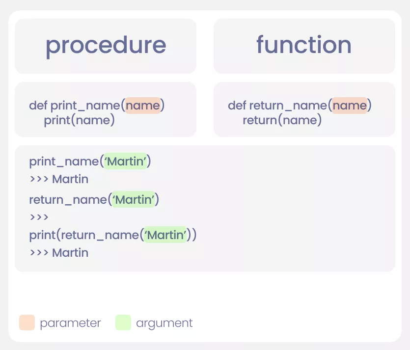
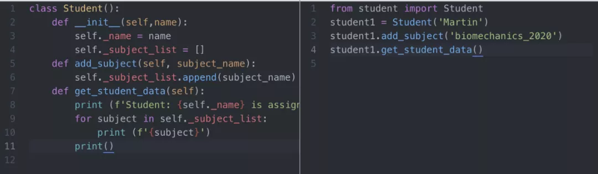
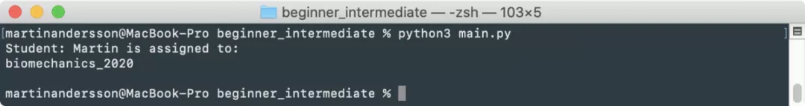
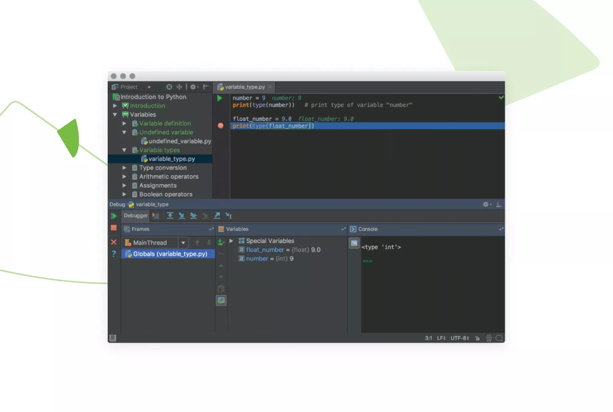
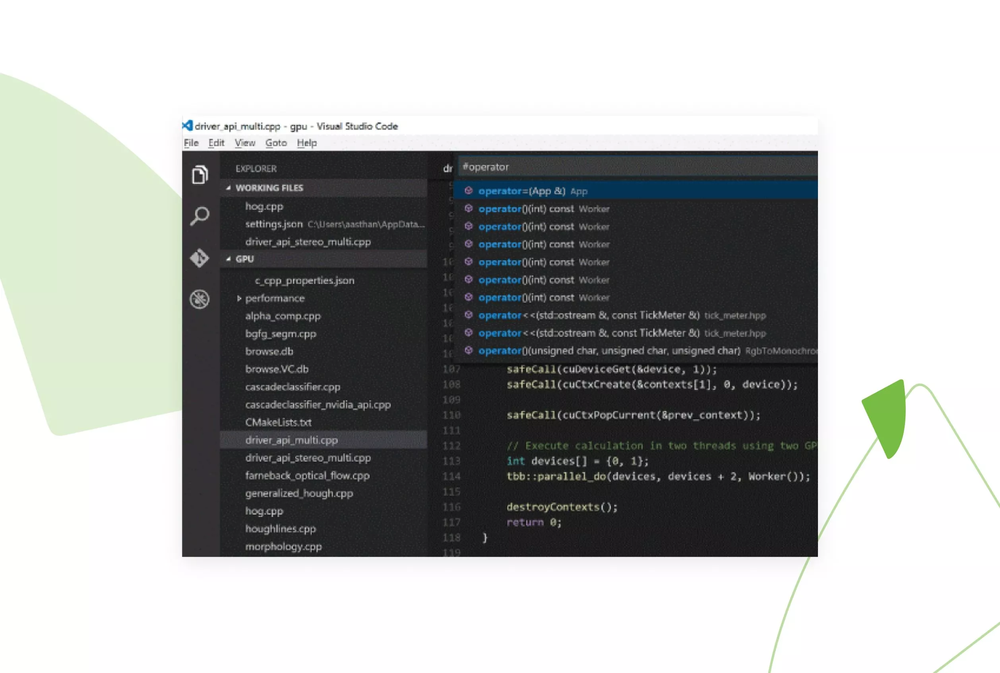
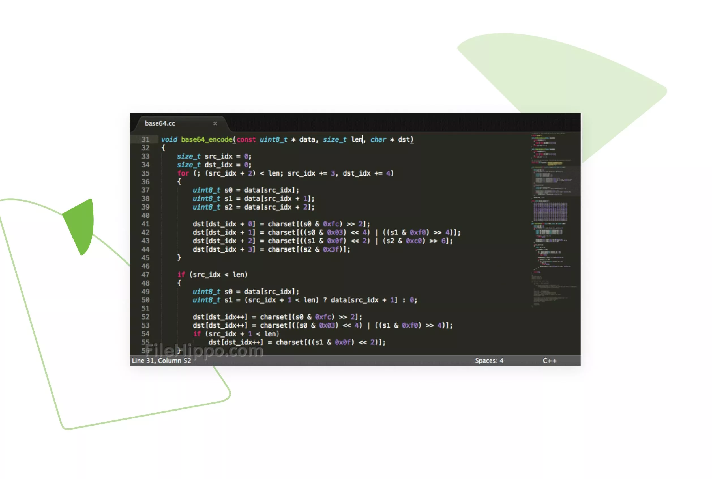
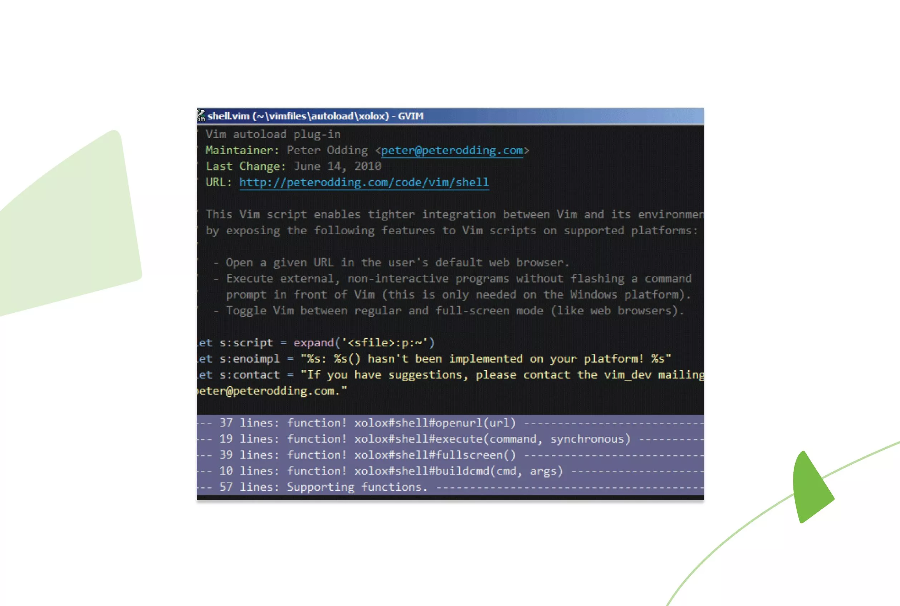
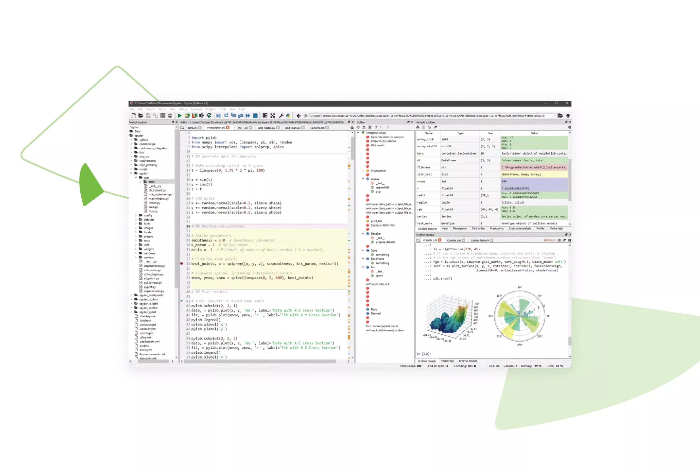
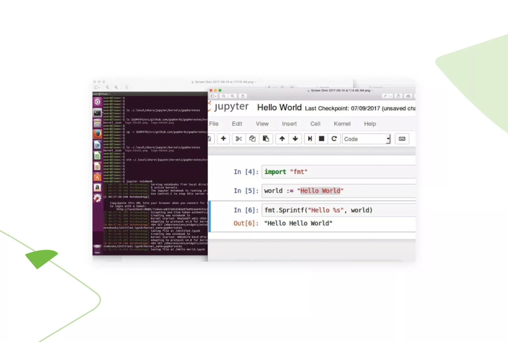

第 2 章 Python基础
机器学习绕不开学Python，但是我们一样要用工程师的标准要求自己。以下学习建议来自medium上的一位博主，我深以为然，这里仅列出涉及Python编程习惯的部分：
1、学会提出问题和解决问题
如果你解决问题的思维不够发达，可能就无法为你要解决的问题找到最佳的解决方案。编程不仅仅是编写代码，需要解决问题才能有机会出初学者行列。
提出编程相关的问题也很重要。如果不经尝试，就让别人解决你的问题，可能也会出局。这很难，但如果不尝试自己解决问题，你将对解决方案一无所得。
2. XY问题：
“我需要从字符串中提取最后3个字符。”
“不，你不需要。只需文件扩展名。”
XY问题很有趣。你有个X问题，当你调用服务中心时，会寻求Y问题的解决方案，以解决X问题。
上面的案例就是极好的例子。如果想要文件名中的文件扩展名，很容易假设你需要的是最后3个字母。
如何写代码：
def extract_ext(filename):
return filename[-3:]
print (extract_ext('photo_of_sasquatch.png'))
>>> png用户从一开始应该会索要扩展名，最后3个字母是Y问题，而X问题是我们想要扩展名。
def extract_ext(filename):
return filename.split('.')[-1]
print (extract_ext('photo_of_sasquatch.png'))
print (extract_ext('photo_of_lochness.jpeg'))
>>> png
>>> jpeg3. 理解代码为何起作用（或不起作用）：
作为新手，你可能要花几天来对付一小段代码。如果这段代码突然起作用了，你可能会感觉放心，然后继续下一段代码。这是最糟糕的事情之一。不理解原因只管运行的做法，可能比不理解代码的为什么不运行更加危险。
不理解为何代码不运行的情况总会发生，当进行故障排除并搞清楚其原因时，思考代码不运行的原因和最终使其运行的因素非常重要。这次学到的知识会带到下一个程序中。
例如，如果多个缩进级别的代码中出现了缩进错误，可以尝试随机调整代码块，然后在最终运行时为自己庆祝。
切记，在大多数IDE中，可以折叠循环和if语句，从而更容易查看正在使用的部分。

另一种办法是将你的代码通过 www.Pythontutor.com可视化，就可以逐行查看代码运行的方式了。

4. 使用函数（并正确谈论函数）：
如果同一个操作重复5次，就应该考虑是否需要写个程序。编写代码时，如果发现同一动作执行了不止一次，应该考虑这是过程还是函数，还不只是写写代码。函数会返回内容，过程则只是运行代码，第一个案例是个过程，第二个是函数。
这样说可能会令人困惑，下面是其工作原理的示意图：

注意print和return的差异，看起来也许很相似，但如果你查看输出结果，函数只会返回发送的名称。
下一个要了解的语法是parameters和arguments，在过程或函数中定义时（红色部分）被称为形参（parameters），当发送名称到过程或函数中（绿色部分）时就叫实参（arguments）了。
5.面向对象编程
Python是一种面向对象的语言，其强大之处在于对象。将对象视为蓝图，如果使用蓝图，你可以创建该蓝图的实例。也就是说，你可以创建需要的多个蓝图实例，但不会损毁你使用的蓝图。
面向对象编程（OOP）是一个庞大的话题，因此我们不会在本节中涵盖所有你需要了解的内容，但可以通过几个简单的示例帮你入门。
如果你之前读过面向对象编程的相关内容，可能已经厌倦了学生（student）类，但我们又来了。从定义一个名为student的类开始，student会拥有一个名称和一个subject_list：
class Student():
def __init__(self,name):
self._name = name
self._subject_list = []如果想要创建一个student，可以像这样将其分配给变量：
student1 = Student('Martin Aaberge')如果需要更多student，可以使用同一个类并添加另外的姓名：
student2 = Student(‘Ninja Henderson’)
student1和student2都是student类的实例，它们共享同一个蓝图，但彼此之间并无关系。此时，我们对学生们能做的不多，但我们确实增加了一个主题列表。要填充此列表，我们需要创建方法，你可以调用方法来实现与该类实例的交互。
我们更新：
class Student():
def __init__(self,name):
self._name = name
self._subject_list = []
def add_subject(self, subject_name):
self._subject_list.append(subject_name)
def get_student_data(self):
print (f'Student: {self._name} is assigned to:')
for subject in self._subject_list:
print (f'{subject}')
print()这个类可以用于创建、编辑学生信息，并获取我们存在其中的信息：
#create students:
student1 = Student('Martin Aaberge')
student2 = Student('Heidi Hummelvold')
#add subjects to student1
student1.add_subject('psychology_101')
student1.add_subject('it_security_101')
#add subject to student2
student2.add_subject('leadership_101')
#print current data on students
student1.get_student_data()
student2.get_student_data()将类保存在单独的文件中并导入主代码的操作很常见，在我们的案例中，我们会在student.py文件中创建一个student类，并将其导入我们的main.py文件（本案例中，它们都位于同一个文件夹中）。
from student import Student
student1 = Student('Martin')
student1.add_subject('biomechanics_2020')
student1.get_student_data()

6.尊重PEP
我们经常看到人们在写Python代码时并不尊重PEP（Python增强提案：Python Enhancement Proposals），但我自己会尊重。
当你在开发环境中工作时，遵守标准非常重要——如果不是PEP标准，也至少要遵守公司的标准。
PEP是代码的一组准则，下面是PEP-8的链接（https://www.Python.org/dev/peps/pep-0008/），读起来很棒。请确保你通读过一次，了解大概内容。
2.1 Python
2.1.1 Python学习教程/方法
2.1.2 Python基础系列
2.1.3 Python库
2.2 Numpy
NumPy是Python中用于数据分析、机器学习、科学计算的重要软件包。它极大地简化了向量和矩阵的操作及处理。python的不少数据处理软件包依赖于NumPy作为其基础架构的核心部分（例如scikit-learn、SciPy、Pandas和tensorflow）。除了数据切片和数据切块的功能之外，掌握numpy也使得开发者在使用各数据处理库调试和处理复杂用例时更具优势。
重点推荐：最好的NumPy图解教程
2.3 Pandas
Pandas是Python最知名的数据分析和处理库。它提供了许多的函数和方法，可加快数据分析和预处理步骤。今天介绍的这些示例将涵盖您可能在典型的数据分析过程中使用的几乎所有函数和方法。
Python数据分析之Pandas中的loc、iloc和at/iat
2.5 Python数据可视化
Python数据可视化：赛博朋克风格库mplcyberpunk
Python数据可视化：手绘风格可视化图表库CuteCharts
2.6 环境和IDE
2.6.1 如何选择IDE
写 Python 代码最好的方式莫过于使用集成开发环境（IDE）了。它们不仅能使你的工作更加简单、更具逻辑性，还能够提升编程体验和效率。
每个人都知道这一点。而问题在于，如何从众多选项中选择最好的 Python 开发环境。初级开发者往往面临这个问题。
本文将概述最受程序员欢迎的 Python IDE，以及其他值得考虑的选项。在此之前，我们先来看看 IDE 是什么。
PyCharm

下载地址：https://www.jetbrains.com/pycharm/download/
PyCharm 由著名软件开发公司 JetBrains 开发。在涉及人工智能和机器学习时，它被认为是最好的 Python IDE。最重要的是，Pycharm 合并了多个库（如 Matplotlib 和 NumPy），帮助开发者探索更多可用选项。
兼容性：Windows、MacOS、Linux
主要插件和功能：
内置开发者工具
远程开发能力
实时编辑模式
IPython Notebook
优点：
PyCharm 支持 web 开发框架，如 Pyramid、Flask 和 Django。
提供智能代码功能，可以执行更精确、快速的 bug 修复。
在 Docker 和 Vagrant 连接和 ssh 终端的帮助下，允许在远程主机上进行程序开发。
缺点：
界面庞杂
其优点的成本高昂
IPython Notebook
优点：
PyCharm 支持 web 开发框架，如 Pyramid、Flask 和 Django。
提供智能代码功能，可以执行更精确、快速的 bug 修复。
在 Docker 和 Vagrant 连接和 ssh 终端的帮助下，允许在远程主机上进行程序开发。
缺点：
界面庞杂
其优点的成本高昂
Visual Studio Code

下载地址：https://code.visualstudio.com/Download
Visual Studio Code 有时会与 Visual Studio IDE 混淆，后者并非 Python 使用者常用的工具。VS Code 是完整的代码编辑器，具备很多优秀功能，许多程序员称其为最好的 IDE 编辑器。
兼容性：Windows、Linux、Mac OS
主要插件和功能：
内置 git
自定义工具扩展插件
断点调试
交互式控制台
优点：
其 Electron 框架允许开发者在几乎所有平台上使用 VS Code。
在编辑器中直接 debug。
支持多个键盘快捷键，以加速编程。
缺点：
debug 功能有限。
没有内置模板。
Sublime Text

下载地址：https://www.sublimetext.com/
Sublime Text 被认为是最好的 Python 编辑器，因为它简单、通用、方便。它使用广泛，可用于不同的平台。
兼容性：Windows、Linux、Mac OS
主要插件和功能：
简易导航，实现高性能
支持不同包，以自定义编辑器
只需一个关键词，即可复制常见代码段
即时项目切换和分割编辑
优点：
可处理多种标记语言。
允许用户选择想要进行的项目。
具备能够提供类和函数宽索引的重要工具。
提供强大的 API 和组织化的生态系统，以实现高性能。
缺点：
对于新手来说，过于高级。
其 git 插件不是特别强大。
VI/Vim

下载地址：https://www.vim.org/
Vim 位列最好的 Python IDE 工具前 5 名。它是一个 modal editor，可以从「文件编辑」中分割文件。相比最初的 Vi，Vim 有了巨大进步，功能更加强大。
兼容性：Windows、Linux、Mac OS、IOS、Android、UNIX、AmigaOS、MorphOS
主要插件和功能：
其脚本允许用 Python 执行几乎所有编程任务。
Ctags，帮助实现更好的标记导航。
内置基础词汇补全。
优点：
具备键盘界面，可以提升效率。
支持多个插件（如版本控制工具、文件管理工具）。
通过 .vimrc 文件实现不同扩展功能（如突出显示搜索结果）。
缺点：
界面笨拙，一些开发者认为其不方便使用。
其 modal editor 需要用户花费一定时间学习。
Spyder

下载地址：https://www.spyder-ide.org/
Spyder 是为数据科学而开发的。它是开源工具，能够与大量平台兼容，因而成为 IDE 新手用户的更好选择。为实现完美开发，它合并了多个关键库，如 NumPy、Matplotlib 和 SciPy。
JuPyter/IPython Notebook

下载地址：https://jupyter.org/
Jupyter 是基于 web 的编辑器，它允许开发者构建和运行脚本或 notebook。它相对简单，对用户也更加友好。Jupyter 还使用 Seaborn 和 Matplotlib 执行数据可视化。
本文概述了大量优秀的 Python IDE 和其他工具。决定使用哪一种工具取决于工具的便利性和对工具的熟练程度。当然，也有大家都喜欢的工具（如 PyCharm），但是你可以多尝试几种工具，看看哪种最适合你。
一些 IDE 适合新手，另一些则更加专业，每一个 IDE 都具备独特的功能和设计。本文仅提供一些选项，读者可以从中选择适合自己的 Python IDE。
2.6.3 VSCode
2.7 如何阅读 Python 开源项目代码?
阅读 Python 开源项目代码主要有如下三个原因：
在工作过程中遇到一些问题 Google 和 StackOverFlow 等网站找不到解决办法，只能去翻源码。
对某些项目或者方向非常感兴趣，希望深入。
学习遇到瓶颈需要汲取开源项目的经验和用法来做提高。
要有目的的阅读开源项目
没有目的的阅读开源项目就是耍流氓，浪费了时间，但是能学到的东西也很少。怎么样根据自身情况去阅读呢？
和兴趣以及工作契合。举个例子，工作中没有机会用到 Celery 又不是想自己造个轮子，读它的源码做什么？所以要从平时能接触到的那些项目中选取。有时候不去看 Django 的代码，因为日常工作基本遇不到，遇到了现翻就好了。
一个方向只看一两个典型的就可以了。比如 Web 框架只看过 Bottle 和 Flask 的源码。
清楚自己看代码的目的。就是你看代码是想了解人家怎么设计、调试 BUG、还是只是想学习正确的编程用法呢？其实没有必要细抠每个代码细节，有时候当黑盒看，知道输入输出就可以了。
优秀的开源作者
和工作中看别人代码差不多，基本每个人、每个项目、每个团队都有自己写代码的风格，比如变量命名风格、某些语言特性使用方式、代码规范要求、目录风格等，其实开源项目的作者也是一样。看代码，如看人「团队」
kennethreitz Requests 和 Python-guide 作者。他还有一个非常励志的故事，有兴趣的可以看 谁说程序员不是潜力股？
mitsuhiko flask、Jinja2、werkzeug 和 flask-sqlalchemy 作者。
sigmavirus24 flake8、pycodestyle「原 pep 8」、requests、urllib3 等项目的主要贡献者和维护者。
ask Celery 及相关依赖的作者。
ajdavis mongo-Python-driver「pymongo」、tornado 等项目的主要贡献者。
bitprophet fabric、paramiko「Python 的 ssh 库」作者。
前 2 个是公认的 Python 领域代码写的最好的、最有创意的工程师。
推荐一个非常厉害的项目 GitHub - aosabook/500lines(https://github.com/aosabook/500lines)
500 Lines or Less, 它里面包含了 22 个由该领域的专家完成，用不到 500 行的代码实现一个特定功能的子项目。连 Guido van Rossum 都亲自来写基于 asyncio 爬虫了，Nick Coghlan、ajdavis 也出场了。